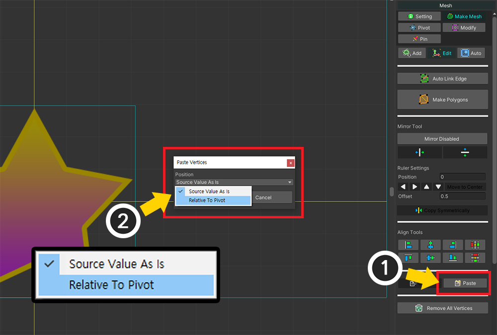
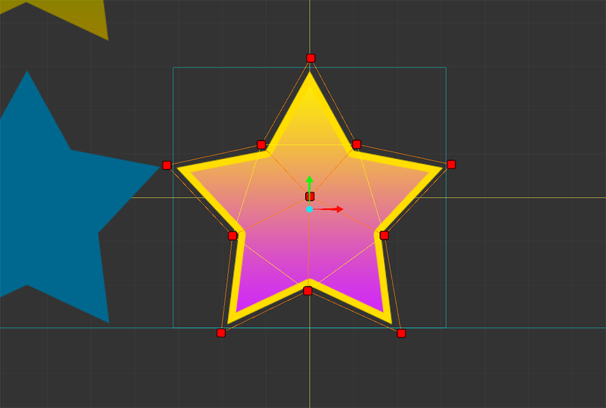

AnyPortrait > 메뉴얼 > 버텍스 복사하기
버텍스 복사하기
1.4.2
이미지 아틀라스(Atlas) 내에 유사한 이미지가 2개 이상 존재할 때, 메시의 버텍스들을 복사하여 반복되는 작업을 줄일 수 있습니다.
이 페이지에서는 메시의 버텍스들을 복사하여 동일한 메시에 붙여넣거나 다른 메시에 붙여넣는 방법을 소개합니다.

비슷한 형태의 메시들을 만들 필요가 있는 이미지입니다.
하나의 메시를 만들고, 이를 복사하면 작업량을 줄일 수 있을 것입니다.

(1) 메시를 선택합니다.
(2) Make Mesh 탭을 선택합니다.
(3) Edit 도구를 선택합니다.
(4) 복사하고자 하는 버텍스들을 선택합니다.
(5) Copy 버튼을 눌러서 버텍스들을 복사합니다.

(1) 복사한 버텍스들을 붙여넣을 다른 메시를 선택합니다.
(2) Make Mesh 탭을 선택합니다.
(3) Edit 도구를 선택합니다.
(4) Paste 버튼을 누릅니다.
(5) 붙여넣기를 어떻게 할지 물어보는 다이얼로그가 나타납니다.
일단 기본값인 "Source Value As Is" 옵션을 선택한 상태에서 Paste 버튼을 눌러봅시다.

위와 같이 버텍스들이 복사되는 것을 볼 수 있습니다.
하지만 버텍스들이 기존 메시의 이미지에 해당하는 위치로 복사되었기 때문에, 이 버텍스들을 이동시킬 필요가 있습니다.
만약 각각의 메시들의 Pivot이 적절히 설정된 상태라면, 버텍스들을 더 정확한 위치로 붙여넣을 수 있습니다.

버텍스들을 붙여넣기 전의 단계로 돌아옵니다.
(1) 다시 Paste 버튼을 누릅니다.
(2) 이번에는 Position 옵션의 값을 Relative To Pivot으로 변경하고 Paste 버튼을 누릅니다.

버텍스들이 Pivot의 상대 좌표를 기준으로 위치가 변환되어 복사됩니다.
만약 메시의 Pivot이 적절히 설정된 상태라면, 위와 같이 버텍스들이 적절한 위치로 복사된 것을 볼 수 있습니다.